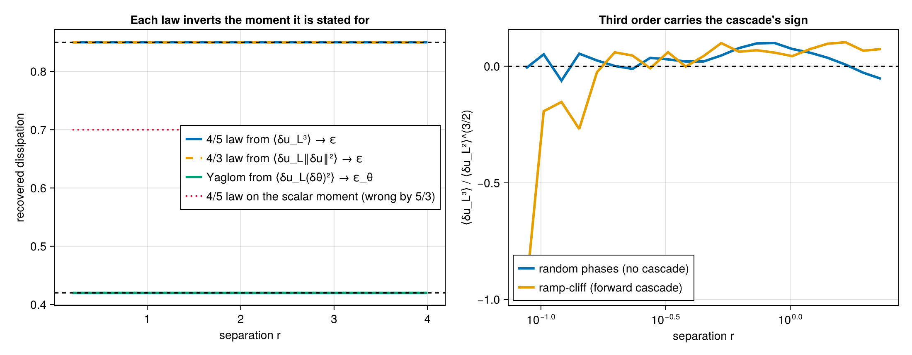

Exact laws (KHM)
The Kármán–Howarth–Monin exact laws relate a third-order structure function in the inertial range to a dissipation or flux. StructureFunctions.KHM inverts them on already-binned results and reports the residual of each law. Each law is stated for one moment: the four-fifths law applied to S3SF returns 5/3 times the dissipation.
| law | moment | operator | relation | inversion |
|---|---|---|---|---|
| four-fifths (Kolmogorov 1941) | $⟨δu_L³⟩$ | L3SFType | $⟨δu_L³⟩ = -\tfrac{4}{5} ε r$ | KHM.epsilon_from_four_fifths |
| four-thirds | $⟨δu_L ‖δu‖²⟩$ | S3SFType | $⟨δu_L ‖δu‖²⟩ = -\tfrac{4}{3} ε r$ | KHM.epsilon_from_four_thirds |
| Yaglom | $⟨δu_L (δθ)²⟩$ | MixedSFType{1,0,2} | $⟨δu_L (δθ)²⟩ = -\tfrac{4}{3} ε_θ r$ | KHM.epsilon_theta_from_yaglom |
using StructureFunctions: KHM
r = [0.5, 1.0, 2.0, 4.0]
epsilon = 0.2
L3 = .-(4 / 5) .* epsilon .* r
estimate = KHM.epsilon_from_four_fifths(r, L3)
@assert all(isapprox.(estimate, epsilon))
KHM.four_fifths_residual(r, L3, epsilon)4-element Vector{Float64}:
0.0
0.0
0.0
0.0This analytic fixture checks the normalization of the diagnostic. For measured data, pass the longitudinal third-order moment at each positive separation. A constant estimate over a chosen interval must be assessed against the flow's physical assumptions and sampling uncertainty.

The residual of the planar isotropy relation between the longitudinal and transverse second-order functions, $D_{TT} = D_{LL} + r\,\mathrm{d}D_{LL}/\mathrm{d}r$ in two dimensions (Lindborg 1999, eq. 53), is KHM.transverse_incompressibility_residual; on a sphere it holds only to $O((r/R)^2)$.
These are inertial-range relations for homogeneous isotropic turbulence with a single cascade. A synthetic Gaussian field has no cascade and its third-order moments are consistent with zero, so the laws have nothing to recover there; the spectral flux relations of the transforms (spectral_flux, enstrophy_flux) and the regularised fits (fit_flux) are the scale-resolved counterparts.
Functions
StructureFunctions.KHM — Module
Basic homogeneous/isotropic KHM exact-law diagnostics.
Operates on already-binned scalar outputs.
StructureFunctions.KHM.epsilon_from_four_fifths — Method
epsilon_from_four_fifths(r, L3)Dissipation from Kolmogorov's four-fifths law, $⟨δu_L³⟩ = -(4/5) ε r$.
L3 is L3SF, the third-order longitudinal structure function $⟨δu_L³⟩$; S3SF pairs with epsilon_from_four_thirds.
StructureFunctions.KHM.epsilon_from_four_thirds — Method
epsilon_from_four_thirds(r, S3)Dissipation from the four-thirds law, $⟨δu_L‖δu‖²⟩ = -(4/3) ε r$.
S3 is S3SF, the third-order mixed structure function $⟨δu_L‖δu‖²⟩$.
StructureFunctions.KHM.epsilon_theta_from_yaglom — Method
epsilon_theta_from_yaglom(r, LS2)Scalar dissipation from Yaglom's law, $⟨δu_L (δθ)²⟩ = -(4/3) ε_θ r$.
LS2 is the mixed velocity–scalar moment MixedSFType{1,0,2} computes. Returns ε_θ, the dissipation of scalar variance.
StructureFunctions.KHM.finite_difference — Method
finite_difference(r, y)Differentiate samples y on finite, strictly increasing coordinates r.
For at least three samples, use the quadratic interpolant through three adjacent points, including one-sided endpoint formulas. These formulas are second-order accurate on nonuniform grids. Two samples produce the secant slope at both points. The output element type promotes the floating-point types of r and y.
StructureFunctions.KHM.four_fifths_residual — Method
four_fifths_residual(r, L3, epsilon)Residual of $⟨δu_L³⟩ = -(4/5) ε r$. L3 is L3SF, as in epsilon_from_four_fifths.
StructureFunctions.KHM.four_thirds_residual — Method
four_thirds_residual(r, S3, epsilon)Residual of $⟨δu_L‖δu‖²⟩ = -(4/3) ε r$.
StructureFunctions.KHM.transverse_incompressibility_residual — Method
transverse_incompressibility_residual(r, D_LL, D_TT; dimension=3)Residual of the isotropic incompressibility relation $D_TT = D_LL + r/(D-1) dD_LL/dr$.
StructureFunctions.KHM.yaglom_residual — Method
yaglom_residual(r, LS2, epsilon_theta)Residual of $⟨δu_L (δθ)²⟩ = -(4/3) ε_θ r$.